Justyna M.miesiąc temu
Bardzo lubię realizować tam zlecenia na sprzęt dla mamy. Panie są miłe i bardzo pomocne.
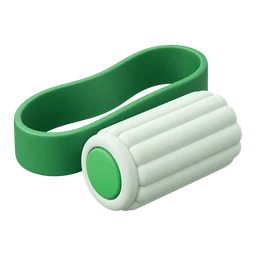
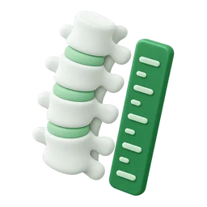
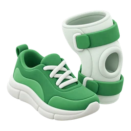
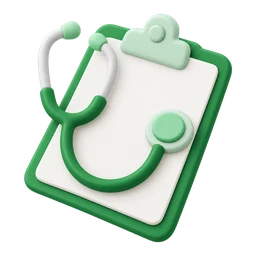
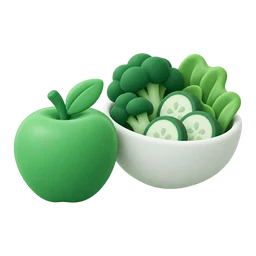
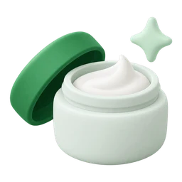
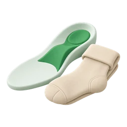
Rejestracja dobierze specjalistę i najbliższy termin.
665 035 035Boli Cię kręgosłup, kolano albo stopa? Znajdziemy przyczynę i poprowadzimy leczenie: fizjoterapia, lekarze specjaliści, diagnostyka i sprzęt z NFZ, w Szczecinie i Koszalinie.
4,6118 opinii w Google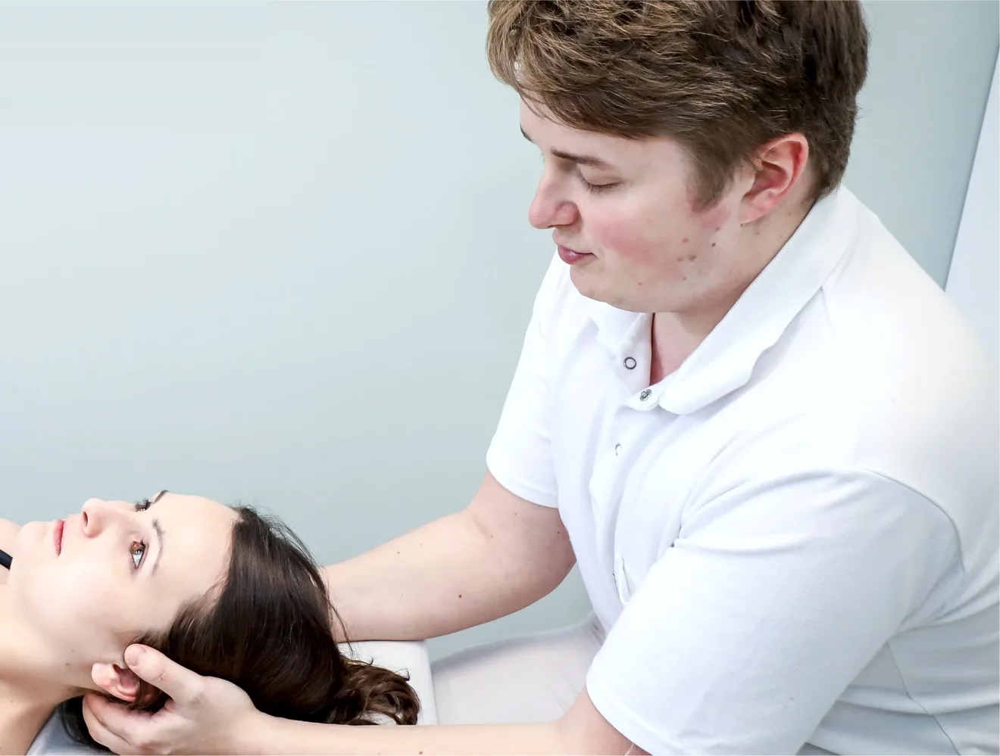
4,6 118 opinii w GoogleNie musisz wiedzieć, jak nazywa się Twój problem. Wybierz to, co czujesz, a pokażemy, kto u nas się tym zajmuje.
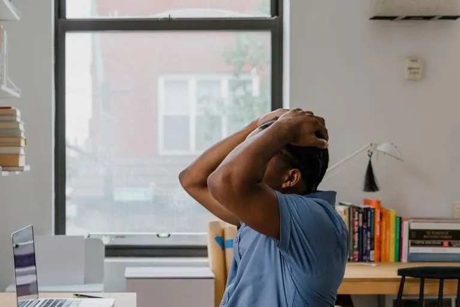
Bolą mnie plecy po dniu przy biurkuFizjoterapia i diagnostyka postawy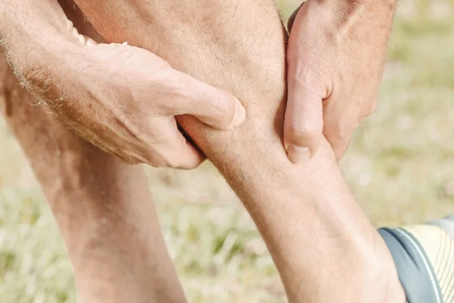
Ból promieniuje do nogi albo drętwieje rękaFizjoterapeuta, neurolog, neurochirurg Kolano boli przy chodzeniu po schodachOrtopeda i fizjoterapia Bark boli, gdy unoszę rękęFizjoterapia, terapia manualna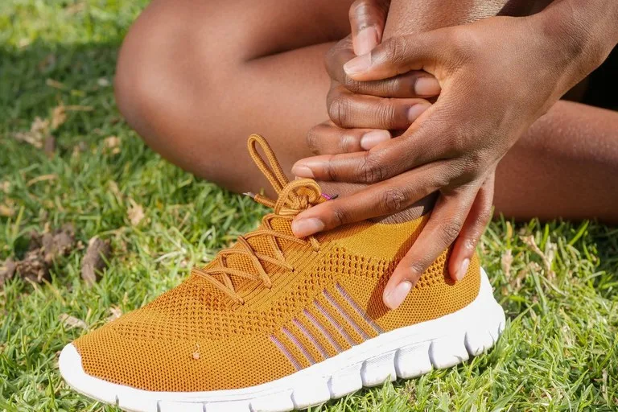
Bolą mnie stopy przy chodzeniuBadanie stóp, wkładki i obuwie ortopedyczne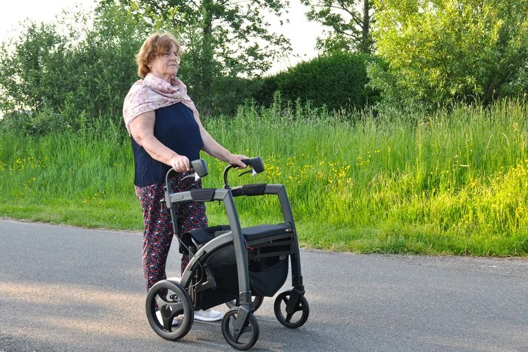
Potrzebuję wózka, kul albo ortezyZaopatrzenie medyczne, także z NFZ Dziecko się garbi albo krzywo stawia stopyDiagnostyka wad postawy dzieci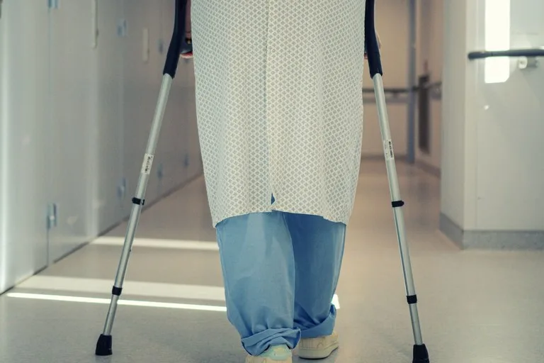
Jestem po urazie, operacji lub kontuzjiRehabilitacja i medycyna sportowaNie ma tu Twojego problemu? Zadzwoń: 665 035 035. Rejestracja dobierze specjalistę i najbliższy termin.
Bezpłatne badania i profilaktyka dla najmłodszych i najstarszych pacjentów.
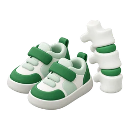
Dla dzieci Zdrowa Nóżka i Kręgosłup 25 000+ przebadanych dzieci Badania postawy i stóp w przedszkolach, przy wsparciu Urzędu Miasta Szczecin. Program działa od 2011 roku. Więcej o programie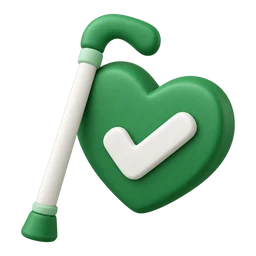
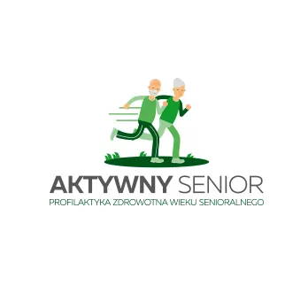
Dla seniorów 60+ Aktywny Senior 1500+ bezpłatnych badań Bezpłatne konsultacje ze specjalistą zaopatrzenia medycznego i okresowe akcje badań profilaktycznych dla uczestników. Dołącz do programuOd zapisu do kontroli efektów. Jeśli przychodzisz pierwszy raz, tu znajdziesz wszystko, co warto wiedzieć.
Online w kalendarzu wybranej placówki albo pod numerem 665 035 035. Na wizytę prywatną skierowanie zwykle nie jest potrzebne.
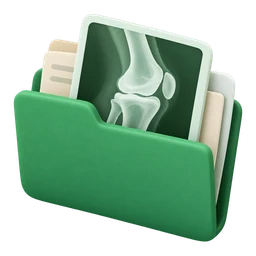
Zabierz wyniki badań (RTG, USG, rezonans), wypisy ze szpitala, zalecenia lekarza, listę leków i wygodny strój.
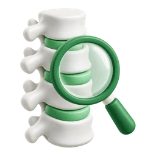
Szukamy przyczyny problemu, nie tylko objawów. W trudniejszych przypadkach plan układa zespół: fizjoterapeuta i lekarz.
Prowadzimy terapię i sprawdzamy efekty, także badaniem USG. Gdy trzeba, zmieniamy plan.
Nie możesz przyjść? Termin zmienisz albo odwołasz najpóźniej 24 godziny przed wizytą.
Fizjoterapeuci i lekarze: ortopeda, neurolog, neurochirurg. Przy trudniejszych przypadkach konsultują pacjenta wspólnie.
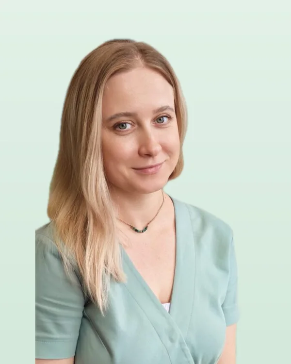
Fizjoterapeutka dzieci Magdalena Sałabon Wady postawy, stóp i skrzywienie kręgosłupa Fizjoterapeutka Gabriela Majorczyk Bóle kręgosłupa, zawroty głowy i napięcia w ciele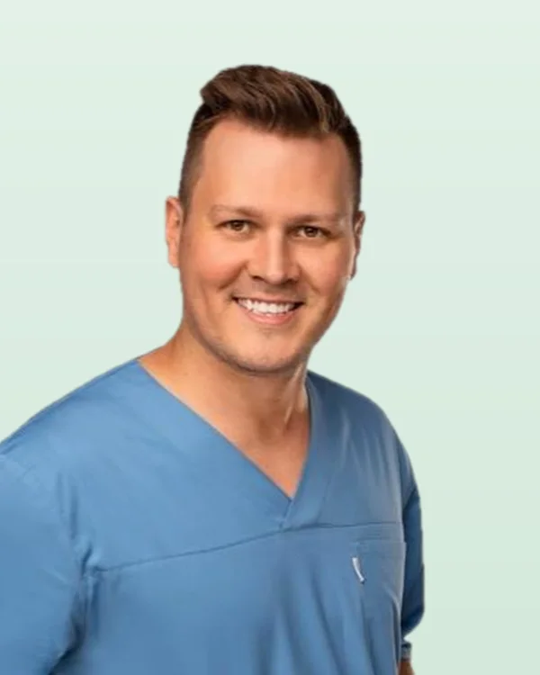
Fizjoterapeuta Tomasz Zdeb Powrót do sprawności przy problemach neurologicznych Neurochirurg, dr n. med. Piotr Sałapa Choroby i urazy kręgosłupa, omówienie wyników badań Cały zespół fizjoterapia, ortopedia, neurologia i neurochirurgia Zobacz cały zespółBardzo lubię realizować tam zlecenia na sprzęt dla mamy. Panie są miłe i bardzo pomocne.
Świadczone usługi na najwyższym poziomie. Profesjonalna obsługa, zna się na fachu oraz prawidłowe podejście do klienta. Polecam ;)
Z całego serca polecam fizjoterapeutę Pana Tomasza! Ogrom wiedzy i profesjonalizmu.
Miałam okazję skorzystać z wizyty w Spondylus w Koszalinie z moim 2-letnim dzieckiem i jestem bardzo zadowolona. Fizjoterapeuta wykazał się ogromnym profesjonalizmem, a jednocześnie świetnym podejściem do małego pacjenta. Wizyta przebiegła w spokojnej i przyjaznej atmosferze, co jest bardzo ważne przy pracy z dziećmi. Specjalista wszystko dokładnie wyjaśnił, odpowiedział na moje pytania i pokazał, jak prawidłowo wykonywać ćwiczenia w domu. Zdecydowanie polecam to miejsce każdemu rodzicowi – widać duże doświadczenie, zaangażowanie i indywidualne podejście do dziecka.
Kolejny rok z rzędu korzystamy z konsultacji lekarza medycyny sportowej w Spondylus i jestem bardzo zadowolony. Wizyta trwała 45 minut na każde dziecko, lekarz bardzo dokładnie wszystko zbadał…
Jestem bardzo zadowolona z usług w Spondylus. Trafiłam tutaj z polecenia. Koślawość stóp korygowana wkładkami robionymi na zamówienie. Choć trwa to długo, już po roku widać poprawę. Warto uzbroić się w cierpliwość. Istnieje również możliwość leczenia zapalenia rozcięgna podeszwowego. Kilka sesji i czuć wyraźną ulgę. Wraz z chłopakiem zapomnieliśmy o bólu towarzyszącemu po wstaniu z krzesła lub łóżka. Przystępne ceny. Duży wybór artykułów medycznych. Fachowa i sympatyczna obsługa oraz fizjoterapeuci. Polecam :)
Trzy kroki od zlecenia do odbioru. W każdym z nich pomożemy.
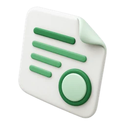
1Wystawia je lekarz, a także pielęgniarka, położna lub fizjoterapeuta. Nie musi mieć umowy z NFZ.
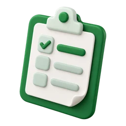
2Zlecenie elektroniczne potwierdza osoba, która je wystawiła, albo oddział NFZ.
NFZ pokrywa koszt do limitu. Udział własny może pokryć PCPR lub MOPR ze środków PFRON, z wnioskiem pomożemy.
Spondylus założył dr Ryszard Wetoszka. W 1997 roku dołączył jego syn, Wojciech Wetoszka. Dziś to trzy placówki w Szczecinie i Koszalinie, połączone jedną infolinią.
Najczęstsze pytania, które pacjenci zadają rejestracji.
Na wizytę prywatną skierowanie zwykle nie jest potrzebne. Wystarczy zapis online albo telefon na infolinię 665 035 035.
Kliknij „Umów wizytę”, wybierz placówkę i wolny termin w kalendarzu online tej placówki. Możesz też zadzwonić na infolinię 665 035 035 i wybrać numer wewnętrzny: 1 Szczecin, centrum, 2 Szczecin, Pogodno, 4 Koszalin.
Wyniki badań (RTG, USG, rezonans), wypisy ze szpitala, zalecenia lekarza, listę przyjmowanych leków i wygodny strój.
Termin zmienisz albo odwołasz najpóźniej 24 godziny przed wizytą, dzwoniąc na infolinię 665 035 035.
Potrzebujesz zlecenia. Wystawia je lekarz, a także pielęgniarka, położna lub fizjoterapeuta. Zlecenie elektroniczne potwierdza osoba, która je wystawiła, albo oddział NFZ. Wyrób odbierzesz w Spondylus.
NFZ pokrywa koszt do limitu. Udział własny może pokryć PCPR lub MOPR ze środków PFRON, a z wnioskiem pomożemy.
Wybierz placówkę i wolny termin w kalendarzu online. Wolisz rozmowę? Zadzwoń na infolinię.
Dostosuj stronę do swoich potrzeb. Ustawienia zapamiętamy na tym urządzeniu.